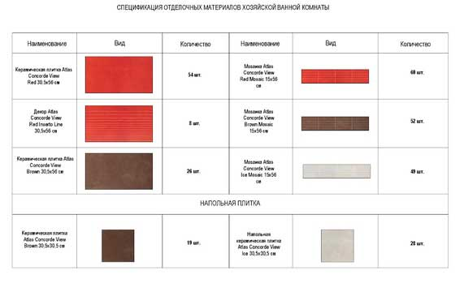

Спецификации материалов и декора

Після завершення всіх обговорень із замовником, внесення необхідних коригувань і остаточного затвердження представлених візуалізацій, креслень і розгорток, дизайнер починає підготовку проекту до здачі і підрахунок необхідних для його реалізації оздоблювальних матеріалів. В даній специфікації, виконаної в форматі таблиці на декількох аркушах, наводиться назва конкретного матеріалу, дається його зображення, точна кількість і вказується приміщення, в якому буде використаний даний матеріал. Необхідно враховувати, що всі цифри вносяться в таблицю без запасу, так як кількість останнього будуть залежати суто від побажань замовника.